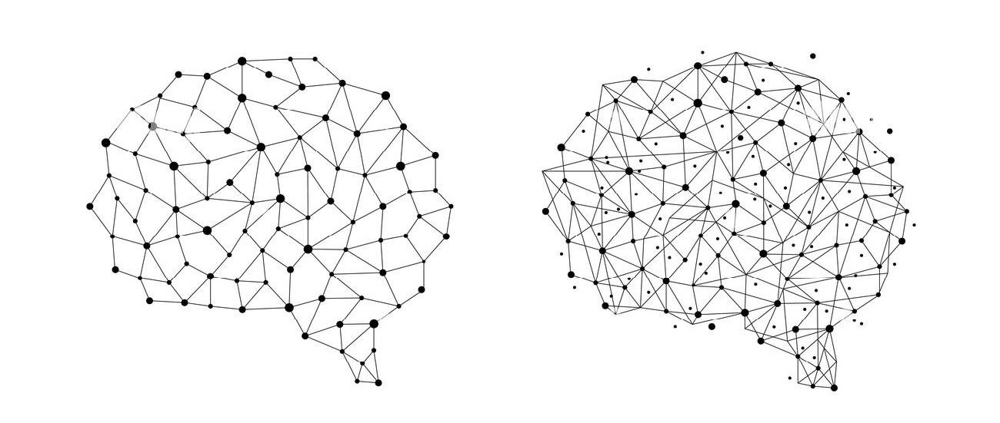
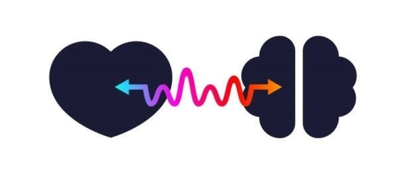

Saba Charmi Motlagh

About me
I am currently pursuing a Master's degree in Computational Neuroscience at Western University, where I specialize in applying machine learning techniques to analyze EEG data and uncover brain representations for real-life conditions. Proficient in Python and MATLAB programming and have knowledge of working with RDBMS like MySQL. I consistently seek opportunities to expand my skill set and apply innovative solutions to everyday challenges. With a knack for adapting swiftly to new environments, I thrive in collaborative settings, fostering strong relationships that bolster collective performance.
My Skills
MATLAB
Python
MySQL
C / C++
HTML / CSS
Git
Selected Projects

